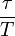
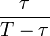

Tastgrad
Der Tastgrad (auch Aussteuergrad, engl.: duty factor) gibt für eine periodische Folge von Impulsen gemäß DIN IEC 60469-1 das Verhältnis der Impulsdauer zur Impulsperiodendauer an. Der Tastgrad wird als dimensionslose Verhältniszahl mit einem Wert von 0 … 1 oder 0 … 100 % angegeben. Dieses wird nachfolgend an idealen Impulsen erläutert, die eine Rechteckschwingung bilden.
{kind=link}
- Tastgrad = 
-
τ : Impulsdauer T : Periodendauer
Speziell für den Tastgrad τ / T = 0,5 = 50 % entsteht ein symmetrischer Puls.
Der Begriff Tastverhältnis kommt in der genannten Norm nicht vor und wird in der Literatur nicht einheitlich verwendet; er wird sowohl für den Tastgrad [1] als auch dessen Kehrwert [2] als auch für das Verhältnis zwischen Impuls- und Pausendauer verwendet. Die letzte Variante entspricht dem in derselben Norm vorkommenden Begriff Ein-Aus-Verhältnis, definiert als das Verhältnis Impulsdauer zu Impulsabstand, also
- Ein-Aus-Verhältnis = 
Anwendung und Bedeutung [Bearbeiten]
Durch Variation des Tastgrades lässt sich der arithmetische Mittelwert der elektrischen Spannung ändern. Da diese Einstellung aufgrund des Schaltens nahezu ohne Verlustleistung erfolgt – im Gegensatz zur Einstellung mit einem Vorwiderstand –, ist diese digitaltechnische Methode eine verbreitete Methode zur Steuerung elektrischer Spannung und Leistung. Anwendungen sind Schaltnetzteile und die Schwingungspaketsteuerung für Heizungen.
Die zugrundeliegende Pulsweitenmodulation ist auch eine Modulationsart zur Erzeugung stufenlos einstellbarer Gleichspannung, in der die Demodulation durch ein Tiefpass hinter der pulsweitenmodulierenden Schaltung zur Mittelwertbildung führt. Trotz des Ein-Aus-Schaltens einsteht ein Analogsignal, da der Tastgrad eine stufenlos einstellbare Größe ist. Bei genügend trägen Anwendungen wird auf den Tiefpass verzichtet, weil zur Mittelwertbildung alleine schon die Trägheit des Systems ausreicht, zum Beispiel bei Heizungen.
Auch manche Digital-Analog-Umsetzer arbeiten mit einstellbarem Tastgrad. Bei einer Rechteckspannung mit konstanter Periodendauer bestimmt die digitale Eingangsinformation die in diesem Fall schrittweise einstellbare Impulsbreite und somit die dazu proportionale mittlere Ausgangsspannung.
Bei der Phasenanschnittsteuerung werden Motordrehzahlen eingestellt mittels variablen Tastgrades an einer sinusförmigen Spannung.
Entsprechendes gilt für die Choppersteuerung.
Literatur [Bearbeiten]
- DIN 5483-1:1983 – Zeitabhängige Größen: Benennung der Zeitabhängigkeit
- DIN IEC 60469-1:1991 – Impulstechnik: Impulsbegriffe und -definitionen
Einzelnachweise [Bearbeiten]
- ↑ Klaus Beuth/Wolfgang Schmusch: Grundschaltungen. 13. Auflage. Vogel Fachbuch, Würzburg 1997, ISBN 3-8023-1733-5.
- ↑ Brechmann, Dzieia, Hörnemann, Hübscher, Jagla, Petersen: Elektrotechnik Tabellen Kommunikationstechnik. 3 Auflage. Westermann, Braunschweig 2001, ISBN 3-14-22 5037-9.